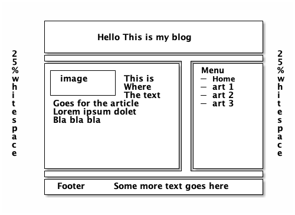

CSS Exercises
Table of Contents
Style your pages
Apply styling to one or more of the pages you made earlier. Try the following:
Text
Change some text colors, sizes, and fonts.
Background
Set a background color for some elements. Try a background image. Can you make it repeat?
Border
Apply a colorful border to some of your text.
Classes
Use CSS Classes to apply some a styling rule to different tags (e.g. style a paragraph and a header with a single rule).
Margins
Play around with margins and padding to position text differently on the page.
Specialities
CSS can do wonderful things like rotating or animating text. See if you can do something fun.. google is your friend!
Links
Apply styling to the links in your page.
They can change styles when the mouse hovers over them, or after you click a link.
Bonus: Blog
Create the layout for a blog. Use these tags: nav, header,
footer. Make sure that your content only takes up half of the width
of the screen, and make it centered.
There are several ways to do this; do your own research! Some suggestions:
- tables: old-fashioned: don't do it
- floats: relatively simple but old technologu
- flexbox: new and cool
- CSS grid: new and cooler
